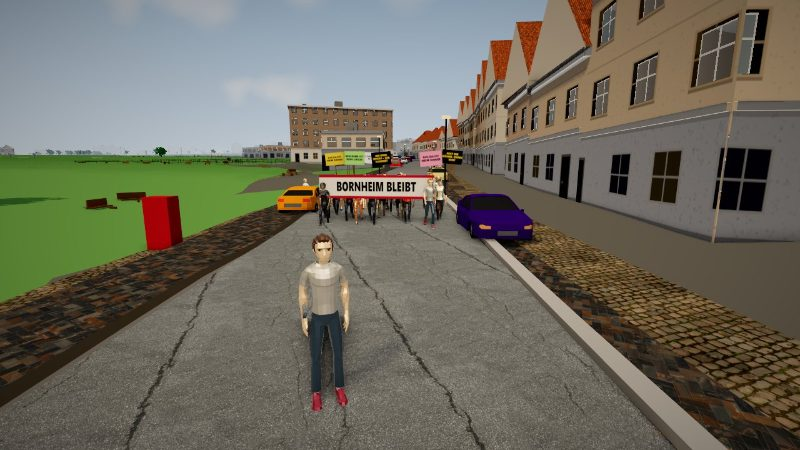
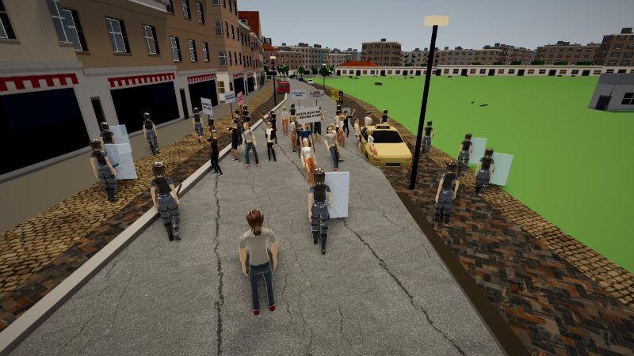
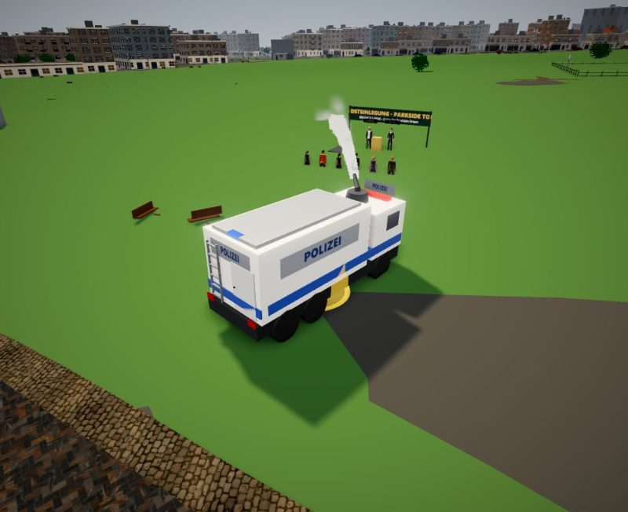
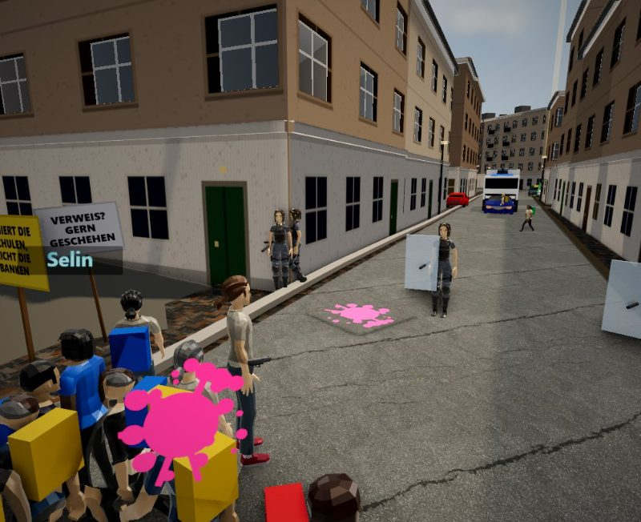
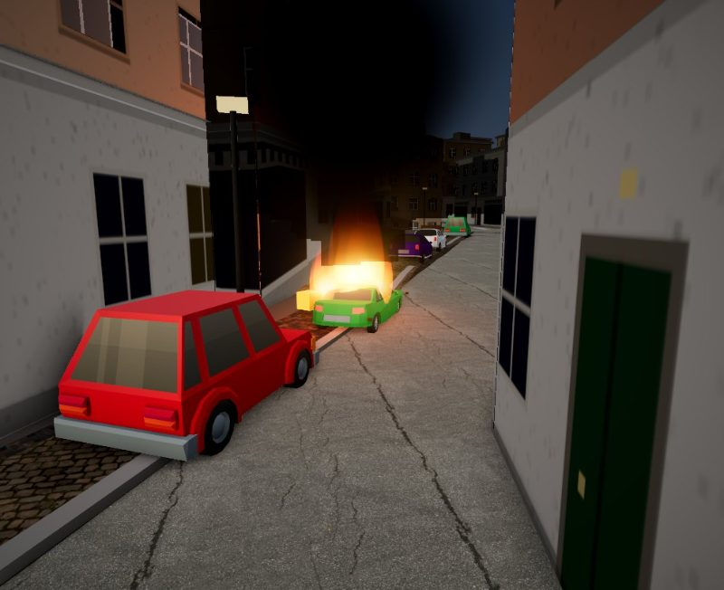

Story
Wie bei den großen Open-World-Spielen gibt es mehrere Geschichten in derselben Stadt. Alle Personen, Firmen und Accounts sind erfunden.





Story 1: Bornheim bleibt
38 Grad, die Mieten explodieren, und Goldach Living will den Günthersburgpark mit Luxustürmen bebauen. Fünf Kapitel von Farbbeuteln auf Werbeplakaten bis zur Großdemo. Drei Enden: friedlich und laut, Kompromiss oder Krawall.
Wie sie startet
Sammle mit G junge Leute um dich, bis eine Demo entsteht, oder lauf bei einer spontanen Demo mit. Oder geh zum lila B am Uhrtürmchen. Oder starte sie im Menü unter „Story“.
Demo und Polizei
Demos entstehen spontan, laufen echte Straßen entlang und blockieren den Verkehr. Die Polizei begleitet, bildet Ketten, kesselt ein, setzt Pfefferspray und Wasserwerfer ein – je nachdem, wie sich die Menge und du verhältst. Mit G deeskalierst du.
Story 2: Freitag ist Pflicht
34 Grad im Klassenraum, die Turnhalle seit zwei Jahren gesperrt. Ein Schulstreik wird zum Sternmarsch, in der Nacht brennen Autos und die Feuerwehr gerät zwischen die Fronten. Sechs Kapitel, drei Enden: Sanierung, Sündenbock oder Spaltung. Start am blauen S vor der Schule.